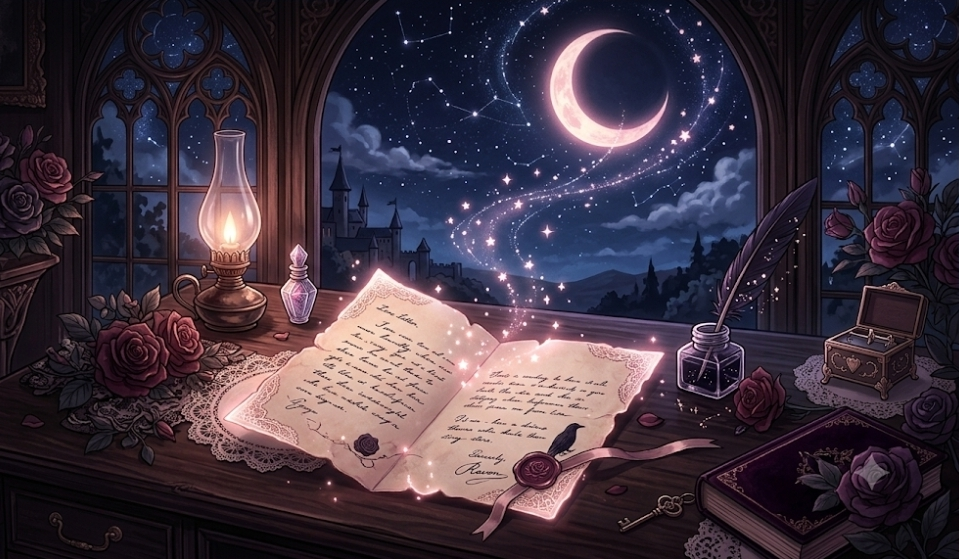
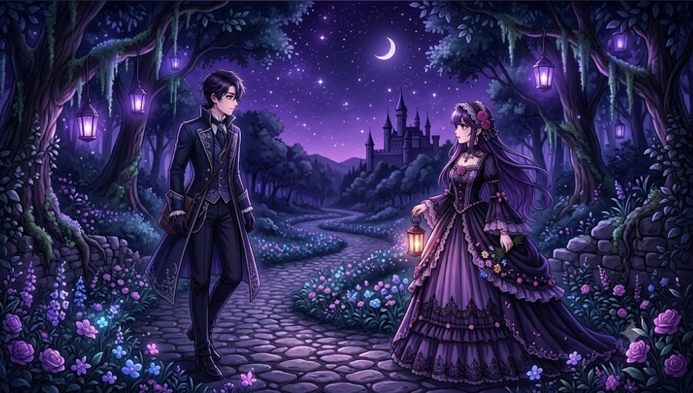
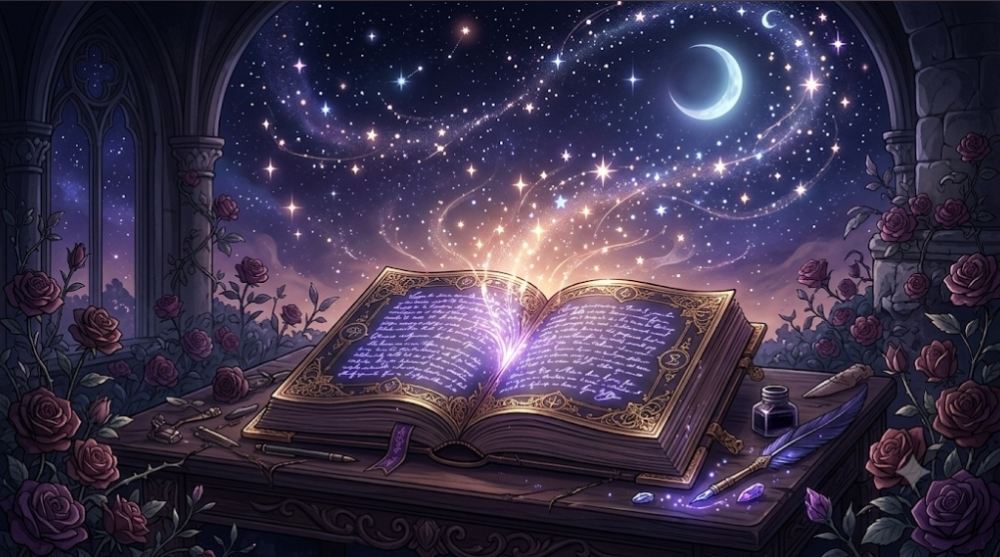
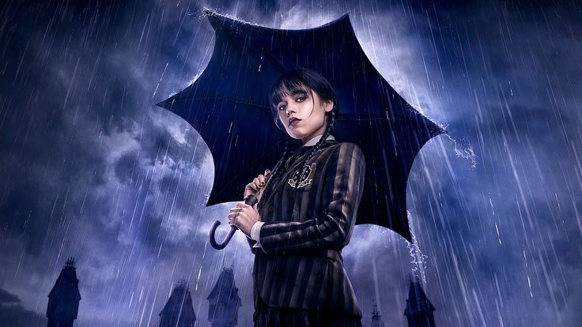
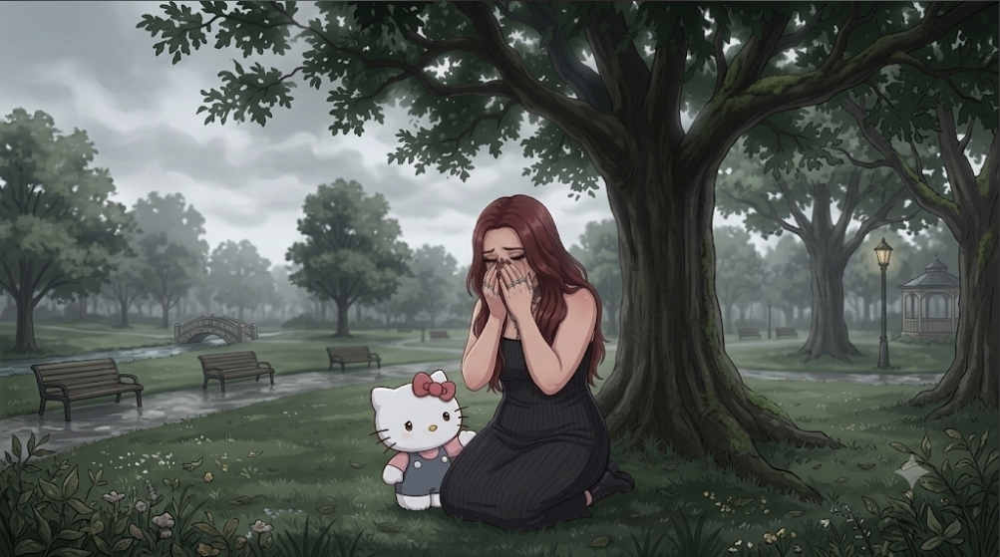

📖 Histórias para a Mel
Cada palavra é um pedacinho do meu coração 💕
Desde que nos conhecemos
0 diasDesde o namoro
0 dias💕

Mel, se eu tentasse medir o quanto te amo, eu precisaria de um número maior que todas as estrelas do céu. Cada uma delas brilha por você.
O tempo que passamos juntos me mostrou que o amor não precisa de razões — ele simplesmente existe. E o nosso existe em cada olhar, em cada risada, em cada abraço que parece que o mundo para.
E mesmo quando a gente briga ou discorda, o amor continua ali, firme. Não é porque a gente se ama que tudo é perfeito; é porque a gente se ama que a gente luta pra ser melhor um pelo outro.
Te amar é a coisa mais fácil e mais bonita que já aconteceu na minha vida. É como respirar: não preciso pensar, só faço. E vou fazer isso até o último suspiro.
Te amo. Simples assim. Imensamente assim.

Não foi um trovão. Foi um sussurro. Não foi amor à primeira vista — foi amor ao primeiro silêncio confortável ao seu lado.
Eu me apaixonei por você aos poucos, sem perceber. Foi quando eu percebi que queria te contar as coisas boas e ruins do meu dia. Foi quando seu nome começou a aparecer em todos os meus pensamentos. Foi quando o futuro passou a ter seu rosto.
Eu me apaixonei pela sua forma de enxergar o mundo, pela sua risada que parece música, pela forma como você me olha como se eu fosse importante.
E o mais bonito de tudo é que você me escolheu também. A gente se encontrou no meio do caos e decidiu construir um jardim.
E é por isso que eu posso dizer, sem medo: me apaixonar por você foi a melhor coisa que a vida já fez por mim.

Há pessoas que passam pela nossa vida como um sopro. Você passou como uma tempestade de rosas — bagunçou tudo, mas deixou um rastro de cor e perfume.
Nossa história é feita de capítulos que a gente ainda vai escrever. Cada dia é uma página em branco, e a gente tem a chance de preencher com amor, risadas, lágrimas de alegria e aventuras.
Eu já sonhei com a gente velhinho, sentado numa varanda, olhando as estrelas e lembrando de tudo que vivemos. E eu sorrio só de pensar que ainda temos tanto chão pela frente.
Que a nossa história seja como as estrelas: eterna, brilhante e capaz de guiar quem está perdido. Porque você, Mel, é a minha estrela-guia. E eu prometo honrar cada capítulo da nossa história.

Wandinha sempre soube que o amor era uma fraqueza. Até que ele apareceu. Não como nos contos de fadas, mas como um enigma que ela queria desvendar.
Era alguém que não tinha medo do seu silêncio. Que ria das suas ironias. Que via beleza no seu lado mais sombrio. E que, sem querer, escreveu uma história que nenhum livro jamais contou.
Não era um amor clichê. Era um amor de olhares que diziam mais que palavras. De toques que pareciam promessas. De noites em claro conversando sobre tudo e sobre nada.
Wandinha descobriu que o amor não é fraqueza. É a maior coragem que alguém pode ter. É se entregar sabendo que pode doer, mas escolher ficar mesmo assim.
E essa história, Mel, é um pouquinho nossa também. Porque você me ensinou que até os corações mais protegidos merecem ser amados.

Mel, eu sei que tem dias em que a mente pesa e o coração aperta. Dias em que tudo parece mais difícil, e a gente esquece o quanto é forte.
Nesses dias, eu quero que você lembre: você já passou por todos os dias difíceis até aqui. E você continua aqui. Isso já é uma vitória.
Respira fundo. Olha ao redor. Você está segura. Eu estou aqui. Não importa a distância, meu coração está sempre com você.
Quando a ansiedade apertar, fecha os olhos e pensa em mim. Pensa nas coisas boas que a gente já viveu e nas que ainda vão vir. Pensa que você é capaz, que você é forte, que você é amada.
E se precisar, coloca esse áudio para lembrar que você nunca está sozinha. Eu vou estar aqui, sempre, em cada batida do meu coração.